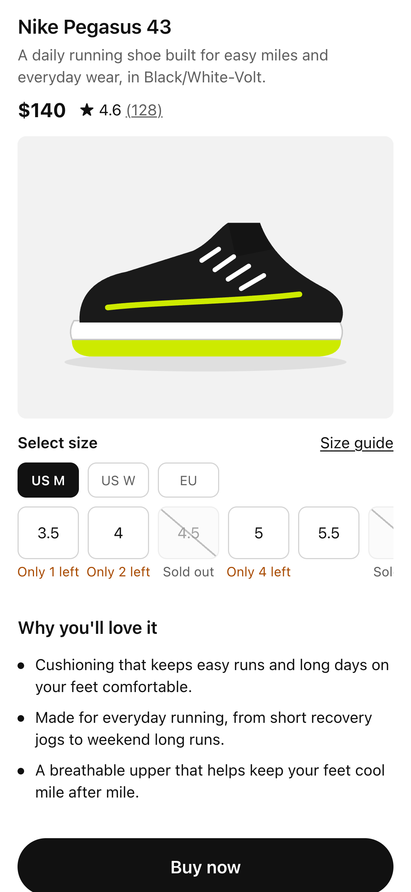
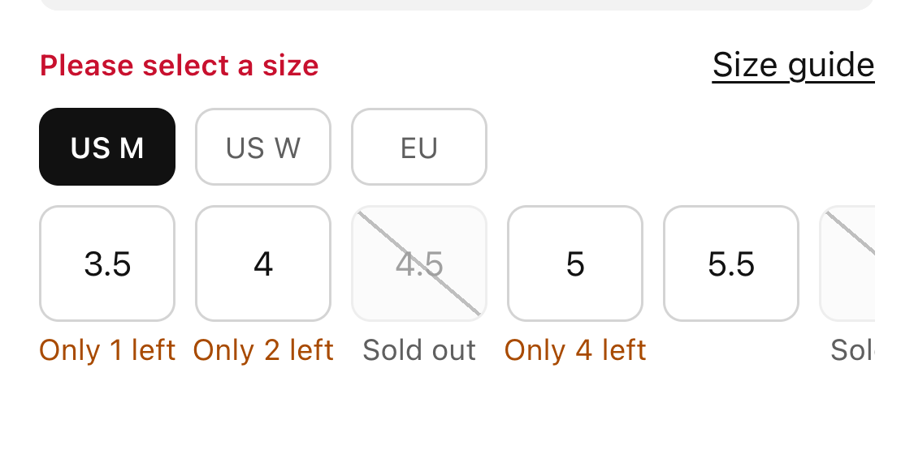
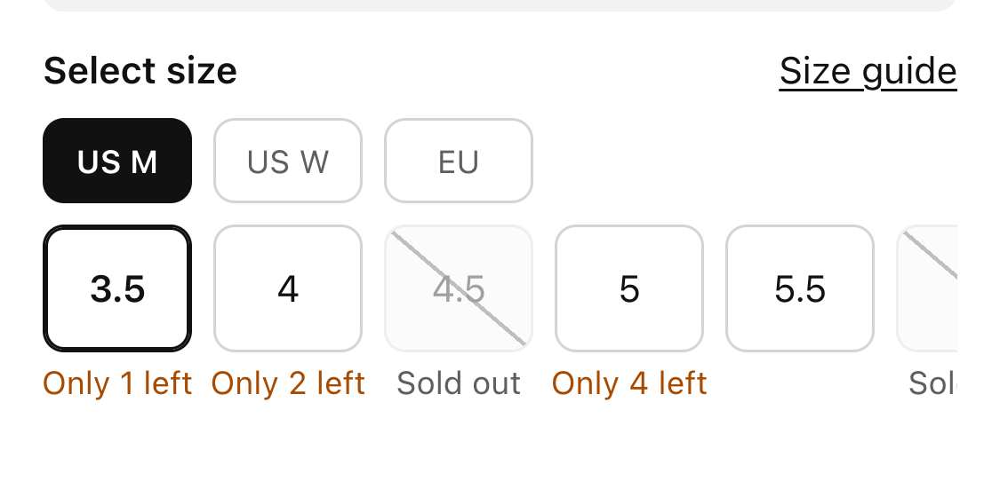
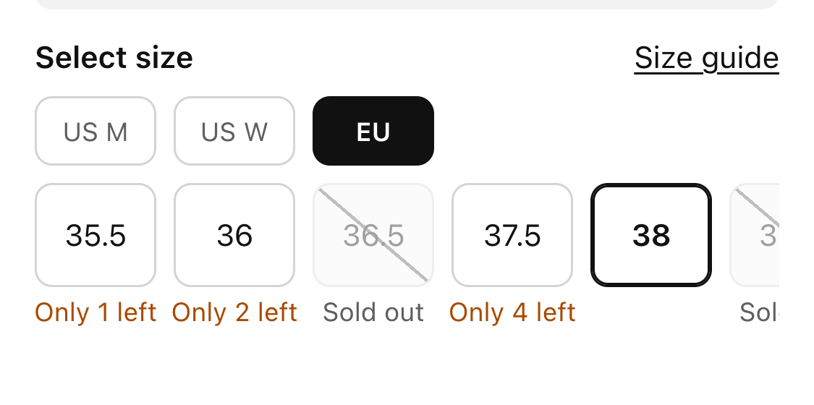

Case study · Mobile product page
Rebuilding the Pegasus 43 product page for phone shoppers, so the size grid never moves under a thumb, even on a slow 4G network.
99
Lighthouse mobile score, live
1.2 s
Main photo on slow 4G, was 2.6 s
0 px
Size grid movement
56×48
Size button, px
Context
A desktop layout on a phone, so shoppers zoomed in to read and tap.
Late photos and messages pushed the size grid down mid-tap.
Blank gaps with no placeholder, so nothing said what was coming.
So what: sizes are the last step before Add to cart, so a moving target there costs the most.
Context
1
Slow 4G: text first, photos and scripts later.
2
Their thumb heads for the size they want.
3
A photo, banner or message lands above the grid.
4
The thumb lands on the wrong size or button.
So what: a faster page alone isn’t enough. The grid has to keep its place whatever arrives late.
Impact
Grid moves
Wrong tap
Frustration
Lost sale
Measure next
Add-to-cart rate after a size tap, before vs after the new page: [__%]
Fix

| Block | Size | Why it can’t move |
|---|---|---|
| Title | 24 px, 1 line | Long names end in “…” |
| Description | 40 px, 2 lines | Clamped to two lines |
| Price and rating | 24 px | Price is in the server HTML |
| Photo | 343×257 | Same-size shimmer placeholder |
| “Select size” row | 20 px | Error text swaps in place |
| US M / US W / EU | 32 px | Own row, lined up with sizes |
| Size grid | 66 px | 48 px buttons + 14 px note |
First screen: 527 px, so the whole size picker fits on an iPhone SE without scrolling.
Fix

Buy now without a size: “Please select a size” replaces the label in the same 20 px row.

3.5 gets a dark ring inside the button. Still 56×48, and “Only 1 left” stays below.

Labels change to EU sizes. 5.5 becomes EU 38 and stays selected. Nothing moves.
So what: on the live site the size grid stayed at 461 px from the top through all seven taps.
Approach
1
375 px column, 16 px sides. No pinching.
2
Product, price, photo, size system and sizes on the first screen.
3
Tap a size, a sold-out size, no size, switch system, scroll.
4
Heights and placeholders that never change while loading.
5
Lighthouse and DevTools, CPU 4× slower, local then live.
So what: planning each case up front meant every state was built to keep its size, not patched later.
Approach
| # | Tap | What the shopper sees | Grid top |
|---|---|---|---|
| 1 | Page loaded | “Select size”; 3.5 “Only 1 left”; 4.5 “Sold out” | 461 px |
| 2 | Buy now, no size | Red “Please select a size”; focus moves to 3.5 | 461 px |
| 3 | 4.5, sold out | Can’t be selected; the error stays | 461 px |
| 4 | 3.5, low stock | Selected; the error clears | 461 px |
| 5 | 5.5, in stock | Selected, replacing 3.5 | 461 px |
| 6 | EU | EU labels; 5.5 becomes EU 38, still selected | 461 px |
| 7 | Add to cart | “Added Nike Pegasus 43, EU 38 to cart” | 461 px |
Measures
99
out of 100, target ≥ 90
| Metric | Live | Score |
|---|---|---|
| First Contentful Paint | 1.0 s | 1.00 |
| Largest Contentful Paint | 1.0 s | 1.00 |
| Total Blocking Time | 20 ms | 1.00 |
| Cumulative Layout Shift | 0 | 1.00 |
| Speed Index | 3.4 s | 0.89 |
| Server response (Vercel) | 30 ms | 1.00 |
Measures
So what: on slow 4G with the CPU 4× slower, the page now paints in 0.7 s and shows the main photo in 1.2 s.
Measures
Lighthouse mobile score
≥ 90
performance_score_min
Live: 99, pass
Size grid movement
0 px
size_grid_shift_px_max
Live: 0 px, pass
Size button, px
≥ 48
size_button_min_px
Live: 56×48, pass
So what: the limits live in speed-budget.json in the repo, so every change can be checked against the same three numbers.
How it was built
Next.js 16
Tailwind CSS 4
Claude Code
Claude Code built, traced and fixed the page with us.
GitHub
Vercel
Pull requests on GitHub. Vercel deploys main to the live URL.
Lighthouse
Chrome DevTools MCP
Slow 4G, CPU 4× slower, 375×812, on the live URL.
Live site
my-project-sable-seven-91.vercel.app
Key insights
01
People tap where the size was a moment ago. A still grid stops accidental taps.
02
Fixed heights and same-size shimmers let late content fill a gap, not push.
03
The photo had downloaded but stayed hidden for JavaScript. Showing it halved LCP.
04
Slow 4G, CPU 4×, the live URL: that turned “feels faster” into a 99.
What’s next
A working live page
Prove it with shoppers
Keep it fast